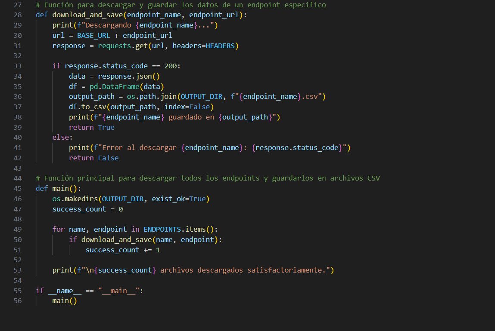
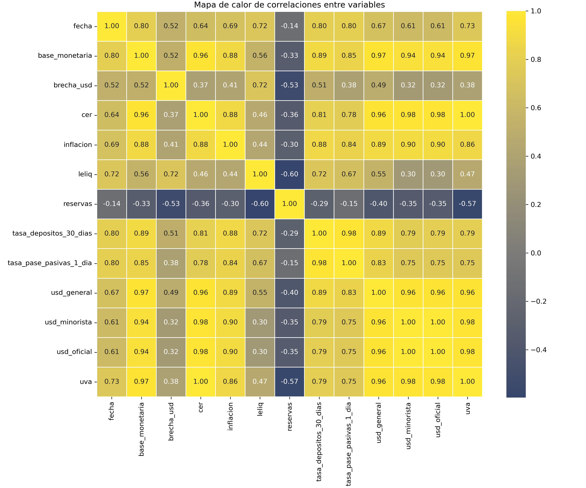
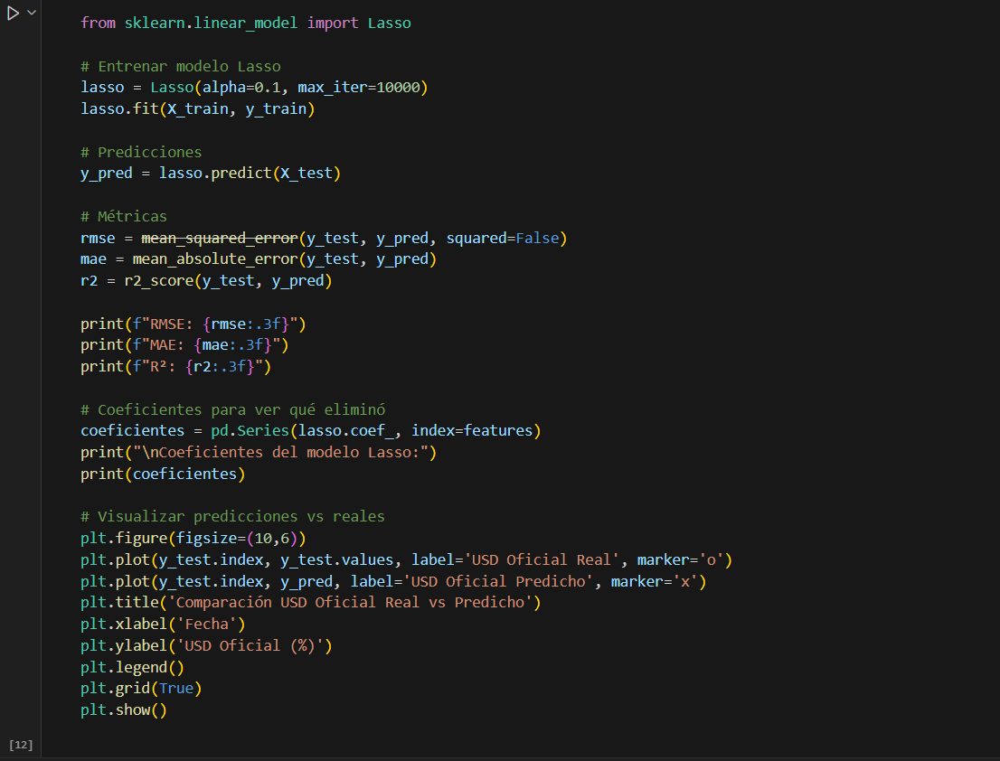
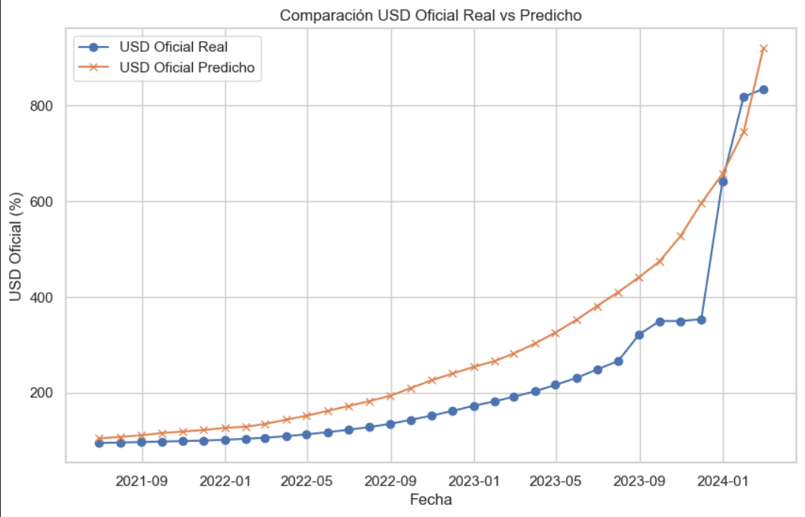

Desarrollo del proyecto

El proyecto comienza con la descarga automática de datos económicos directamente desde la API oficial del Banco Central de la República Argentina (BCRA). Para ello, desarrollé una función personalizada en Python que utiliza la biblioteca requests para hacer solicitudes HTTP y descargar datos desde múltiples endpoints previamente definidos. Cada respuesta se transforma en un DataFrame y se guarda como archivo ".csv", asegurando una estructura homogénea para su posterior análisis. Esta función se integra a un flujo principal que recorre los distintos indicadores y descarga los archivos de forma automatizada. El diseño modular del código permite replicar fácilmente este proceso en otros proyectos con APIs similares, aportando escalabilidad y mantenibilidad. La imagen muestra un fragmento clave del script, donde se valida el estado de la respuesta, se crea el directorio de salida y se registran los resultados. Este paso inicial garantiza un punto de partida robusto, actualizado y reproducible para todo el pipeline analítico posterior.

Con los datos crudos descargados desde los distintos endpoints, implementé un módulo de limpieza y preparación que consolida toda la información en un único DataFrame mensual. El script en Python unifica las series, convierte las fechas al tipo datetime, calcula el promedio mensual de valores diarios cuando aplica, trata valores faltantes y genera variables derivadas. Esta armonización garantiza que cada variable esté alineada temporalmente y que la base resultante sea consistente y adecuada para modelado.
Luego realicé un análisis exploratorio de datos (EDA) con visualización de tendencias, distribuciones y, especialmente, la matriz de correlaciones que se muestra en la imagen y es clave para visualizar la intensidad y dirección de los vinculos entre variables. Este paso es fundamental para comprender relaciones con el tipo de cambio oficial y seleccionar variables predictoras. Utilicé librerías como seaborn y matplotlib para detectar patrones, estacionalidades y posibles outliers. Todo el flujo es reproducible y está documentado en notebooks, lo que asegura transparencia y facilita ajustes futuros.

Antes de construir el modelo, llevé a cabo una selección rigurosa de variables predictoras basada en el dataset consolidado. Allí, combino criterios estadísticos —como correlaciones, colinealidad y varianza explicada— con fundamentos económicos sustantivos, es decir, una interpretación teórica de los indicadores relevantes. Fue un proceso iterativo, en el que probé diversas combinaciones para optimizar rendimiento e interpretabilidad. Las variables finales fueron: inflación mensual oficial, base monetaria, tasa de interés de depósitos a 30 días y el CER. Cada una representa un aspecto clave del entorno macroeconómico: la inflación refleja la pérdida de poder adquisitivo, la base monetaria se asocia al nivel de emisión, las tasas de interés vinculan el precio del dinero con la política monetaria, y el CER introduce un componente indexado útil en períodos de alta nominalidad. La elección del modelo Lasso también fue comparativa: evalué regresión lineal, Ridge, ElasticNet y Random Forest. Lasso destacó por su equilibrio entre simplicidad y desempeño, eliminando automáticamente variables poco relevantes. Esto reduce el riesgo de sobreajuste y favorece modelos más interpretables y parsimoniosos, donde cada variable aporta un peso analítico claro.

Luego de entrenar el modelo y validar su rendimiento, comparé los resultados obtenidos con distintas técnicas de regresión. La regresión Lasso se consolidó como la opción final por su capacidad para reducir la complejidad sin sacrificar desempeño. A nivel cuantitativo, mostró una mejor performance que la regresión lineal múltiple en todos los indicadores evaluados: RMSE (86.124 vs 89.334), MAE (69.272 vs 71.957) y R² en test (0.794 vs 0.778). Además, el R² promedio en validación cruzada fue de 0.938 para ambos modelos, confirmando su estabilidad general. Estos resultados indican que el modelo es capaz de capturar buena parte de la dinámica del dólar oficial argentino a partir de un conjunto reducido de variables macroeconómicas significativas. El gráfico comparativo entre las predicciones y los valores reales permite visualizar de forma clara los aciertos y desvíos, mostrando un muy buen ajuste en contextos estables y mayor dispersión en períodos de volatilidad. Esto confirma el valor del enfoque como herramienta interpretativa: más que anticipar con precisión el futuro, busca representar relaciones estructurales de largo plazo que ayuden a comprender el fenómeno económico.